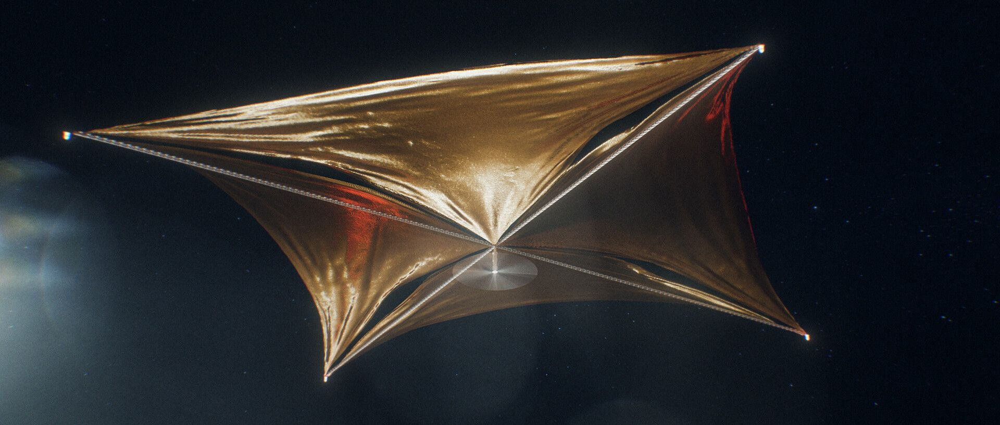

Artist's concept: A solar sail spacecraft in deep space. The reflective membrane converts photon momentum into thrust.
class="abstract-box fade-in" style="margin-top:70px;">
Abstract
The Shkadov Thruster represents one of the simplest concepts in stellar engineering — a
static mirror positioned to reflect a fraction of the Sun's radiation and thereby generate
a net impulse on the Solar System. While the theoretical concept is elegant and consistent
with the fundamental laws of physics, a detailed engineering analysis reveals fundamental
limitations that seriously question its practical realisation. This project examines the
thermodynamic, material, structural, and quantum-electrodynamic aspects of such a system,
with particular attention to nonlinear effects in photon beam interference regions, heat
accumulation in vacuum environments, and the balance between generated thrust and structural
stability. The results indicate that the concept, in its classical form, faces severe physical
and engineering obstacles that render it impractical with current and foreseeable technology.
System Parameters (Scale 1:1 Model)
Mirror Radius
50 m
Full aperture 100 m
Surface Coverage
30%
≈ 108° arc of radiation
Solar Irradiance
63.3 MW
per square metre (surface)
Radiation Pressure
0.42 N/m²
at 100% reflectivity
Mirror Mass (max)
1.5 mg/m²
to overcome solar gravity
Mirror Temperature
> 900°C
predicted at 1 AU (0.1% absorption)
What This Analysis Covers
⚡
Photon Dynamics
Newton's third law at the photon level — momentum transfer, impulse doubling on
perfect reflectors, and the reality of lattice vibration energy losses.
🌡️
Thermodynamic Collapse
Why vacuum is the mirror's worst enemy. With no convective cooling, even 0.1%
absorption is enough to vaporise any known material in minutes.
🔬
Photon–Photon Interference
In the 30° sector where incoming and reflected beams cross, QED effects including
Delbrück scattering and vacuum polarisation disrupt the net thrust vector.
🏗️
Structural Limits
To levitate against solar gravity, areal density must be below 1.5 mg/m² —
a threshold no known material can meet while also being thermally stable.
🌑
Lunar Regolith Mirror
A revised concept using sintered lunar dust at 2.8 AU is evaluated. Transport
feasibility, reflectivity (60%), and thermal fate en-route are modelled.
📊
Data Visualisations
Interactive charts showing temperature, gravitational acceleration, and photon
flux versus heliocentric distance across multiple mirror scenarios.
Concept Background
1987 — Leonid Shkadov proposes the concept
Russian aerospace engineer Leonid Shkadov proposes a static hemispherical mirror in
equilibrium between solar radiation pressure and gravity to generate a net asymmetric
thrust on the Solar System — now classified as a Type I Kardashev megastructure.
1990s–2000s — Theoretical refinements
Various papers extend the geometry, refining optimal coverage angles and the
relationship between mirror areal density and achievable acceleration. Most studies
remain in the realm of theoretical astrophysics.
2010s — Material science gap identified
With advances in graphene, metamaterials, and thin-film optics, researchers begin
quantifying just how far available materials are from meeting the necessary
thermal and structural requirements.
2026 — This Analysis (Project Shadow Solar Sail)
A ground-up engineering critique combining thermodynamics, QED photon interaction
modelling, and a lunar-regolith mirror variant — authored by Darko, Applied
Computer Technician.
Summary Verdict
style="color:var(--success); margin-top:0;">✅ Theoretically Sound
- Photon momentum is real and measurable.
- Net asymmetric radiation pressure is achievable in principle.
- Concept is consistent with Newtonian mechanics and GR.
- Valid as a thought experiment and long-horizon goal.
style="color:var(--danger); margin-top:0;">❌ Engineeringly Unfeasible
- No material survives the required thermal load in vacuum.
- Areal mass ceiling conflicts with structural integrity.
- Photon–photon interference degrades net thrust vector.
- Lunar glass mirror melts before reaching target orbit.
class="alert alert-info" style="margin-top:0;">
Final Assessment: The Shkadov Thruster is useful as a thought experiment
and as a driver for advanced materials research. As an actionable engineering project within
current or near-future technological frameworks — it is not feasible.
Logika ispred Fantazije
style="border:none; padding:0; margin-top:0;">Explore the Full Analysis
Dive into the detailed engineering breakdown, material comparisons, thermal modelling,
and data-driven charts across the next two pages.